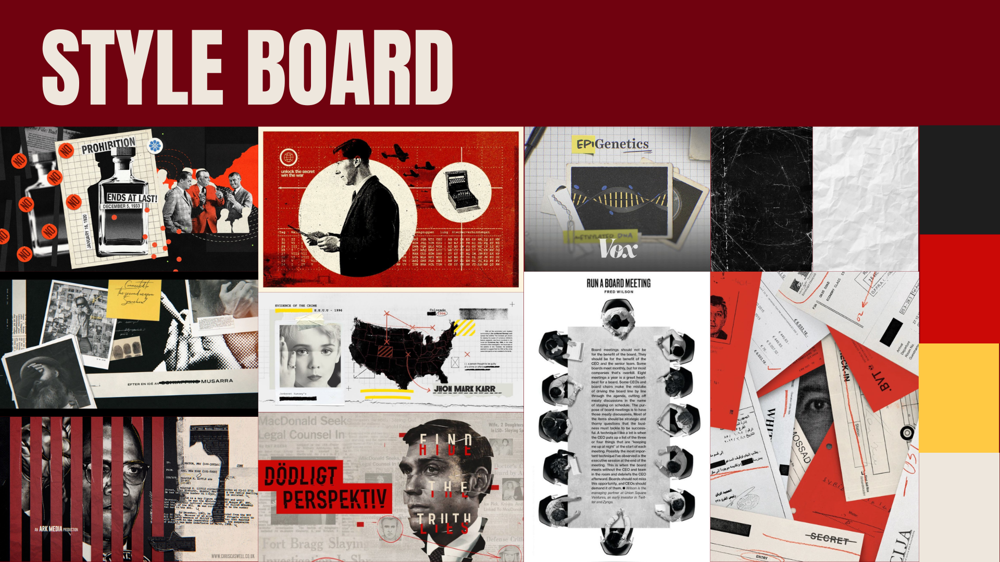
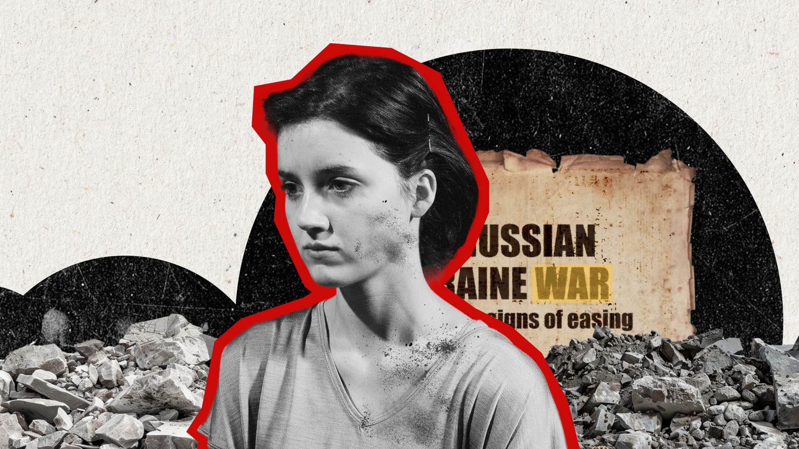
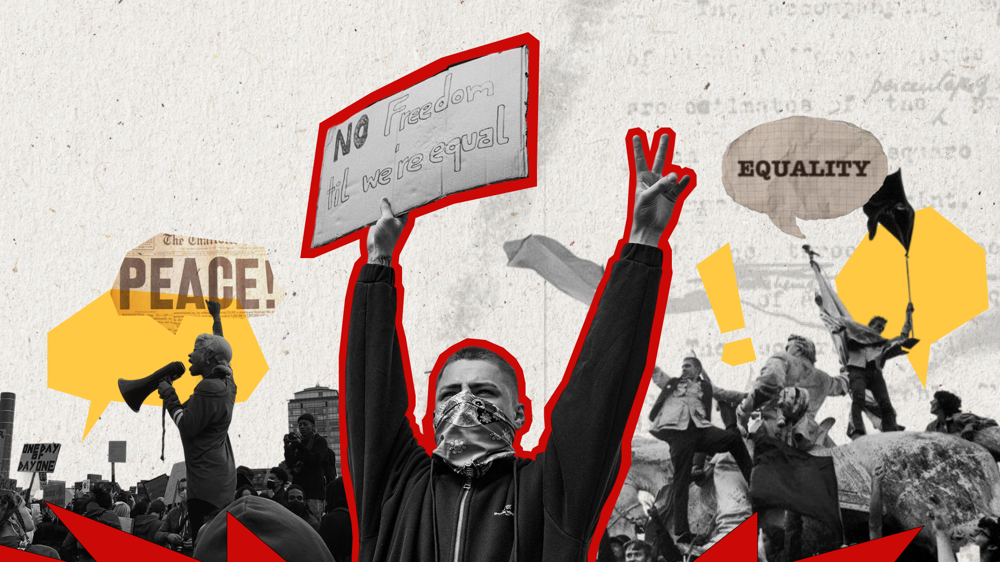

Motion Designer
Script Writer
For this project, I had to choose a Kickstarter campaign and create a promotional video under one minute to showcase and support that project.
This promotional motion piece is for a near‑future fictional drama that explores a UK fractured by civil conflict and rising nationalism , created by Ant as his MA Film & TV Final Major Project. The short film uses documentary‑style interviews and news footage to follow four survivors—a refugee, a former militia member, a shop owner, and a community organiser—as they navigate a collapsing society.
For this project, I aimed for a serious tone, using collage stills and cut‑out photography to evoke a documentary‑style aesthetic.
You can view the final results, the styleboard and the style frames below.


